Research notes
BERT: Pre-training of Deep Bidirectional Transformers
This note follows the BERT review deck: motivation, architecture, input representation, the [CLS] token, self-attention, multi-head attention, pre-training tasks, fine-tuning, results, and scaled dot-product attention. The slide figures are preserved, while a few high-impact wording issues are written in standard BERT terminology.
Paper anchor: jointly conditioning on both left and right context
, mask 15% of all WordPiece tokens
, actual next sentence
, bidirectional Transformer
.
Why BERT?
The starting point is the limitation of earlier contextual language representations. ELMo combines left-to-right and right-to-left language model representations, but the bidirectional information is joined after the independently trained directions. GPT-1 uses a Transformer, but its pre-training is left-to-right, so a token cannot attend to future context during pre-training.
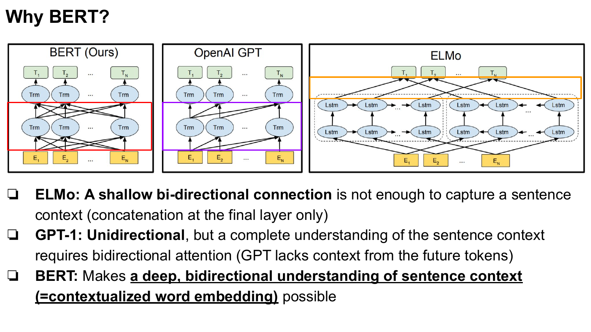
BERT's core move is to make deep bidirectional sentence understanding possible inside the Transformer stack. Instead of learning one static vector for each word type, BERT learns contextualized token representations: the representation for a token depends on the surrounding sequence.
Model Architecture
BERT uses the encoder side of the Transformer architecture. A practical way to read the architecture is: take the contextual encoder idea from ELMo, replace the recurrent encoder with a deeper Transformer encoder stack, and pre-train it with objectives that allow bidirectional context.
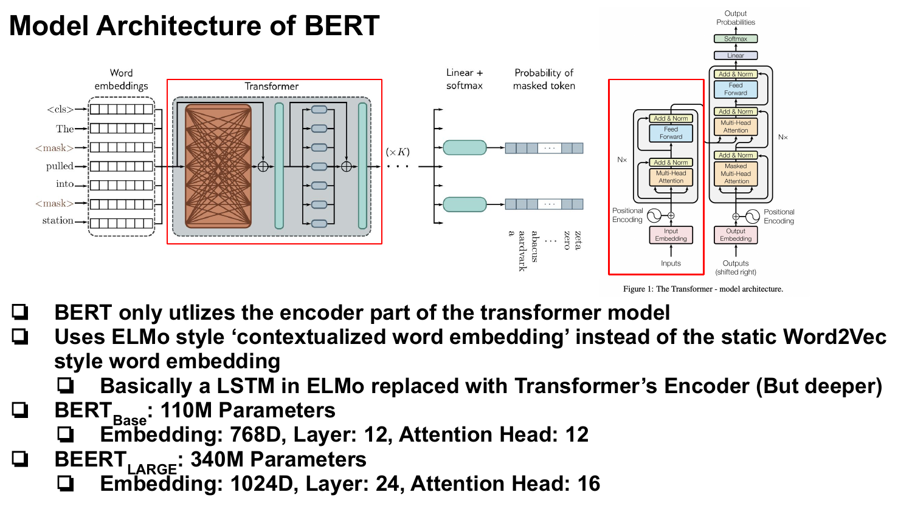
The standard model sizes are:
- BERT_BASE: 12 layers, hidden size 768, 12 attention heads, about 110M parameters.
- BERT_LARGE: 24 layers, hidden size 1024, 16 attention heads, about 340M parameters.
The important distinction is not only parameter count. The key architectural point is that every layer can mix left and right context through bidirectional self-attention.
Input Representation
BERT starts with WordPiece token ids. The deck's example sentence, "My dog is lovely.", becomes a sequence of vocabulary ids, and those ids index rows in a trainable token embedding matrix. In the original BERT setup, the vocabulary is about 30,000 WordPiece tokens and BERT_BASE uses 768-dimensional embeddings.
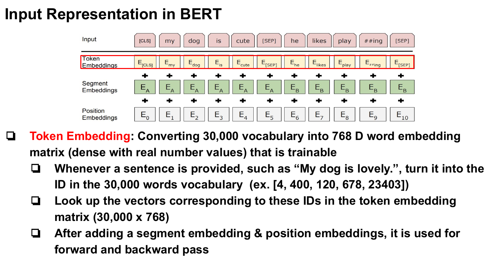
The final input representation is the sum of three vectors for each token: token embedding, segment embedding, and position embedding.
Segment and Position Embeddings
Segment embeddings tell BERT whether a token belongs to sentence A or sentence B. The vectors \(E_A\) and \(E_B\) are learned vectors added to the corresponding tokens. This lets BERT preserve each token's lexical representation while also indicating sentence membership.
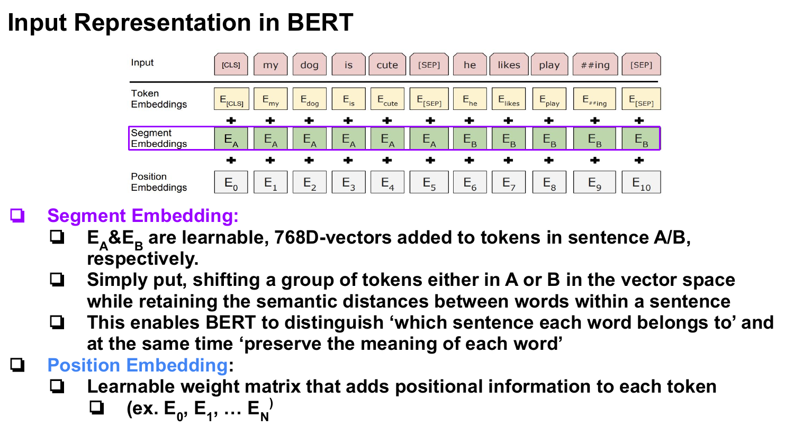
BERT also uses learned position embeddings. This differs from the sinusoidal positional encoding used in the original Transformer paper, but the role is the same: the model needs explicit information about token order because self-attention itself is permutation-invariant.
The [CLS] Token
The [CLS] token is placed at the beginning of the sequence. After the encoder stack, the final hidden state at this position is used as an aggregate sequence representation for classification-style tasks.
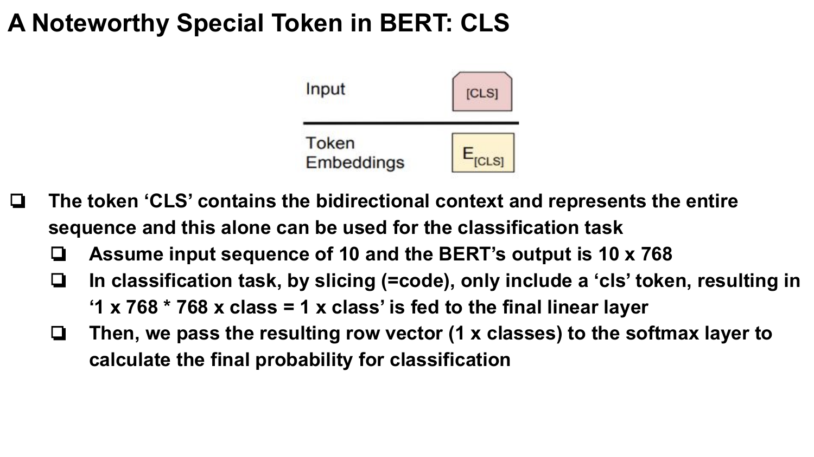
If the BERT output for a length-10 input is \(10 \times 768\), classification commonly uses the first row, corresponding to [CLS]. A linear layer maps that \(1 \times 768\) vector to class logits, and softmax converts logits into probabilities.
Self-Attention in BERT
Self-attention in BERT follows the same scaled dot-product attention mechanism used in the Transformer encoder. The difference from encoder-decoder attention is that \(Q\), \(K\), and \(V\) are all projected from the same input sequence.
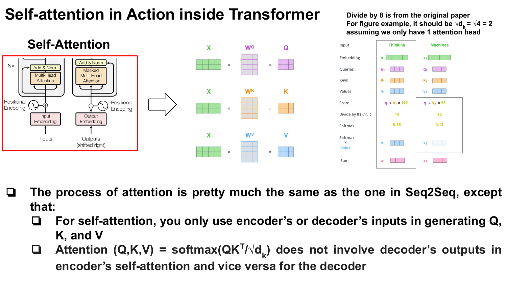
The scaling denominator depends on the key dimension for a head. In BERT_BASE, the hidden size is 768 and there are 12 heads, so each head has \(d_k=64\), making \(\sqrt{d_k}=8\). In the slide's toy figure with \(d_k=4\), the correct toy denominator is \(2\).
Multi-Head Attention
Multi-head attention can be understood as several learned attention filters running in parallel. Each head has separate projection matrices, so different heads can capture different token-to-token relations.
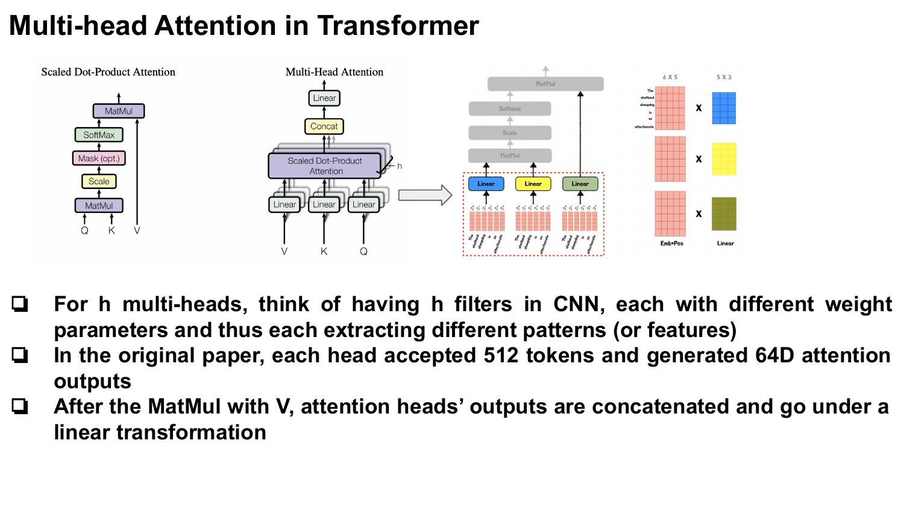
In BERT_BASE, each token representation has hidden size 768, and each of the 12 heads works with 64-dimensional projected \(Q\), \(K\), and \(V\) vectors. The sequence length is separate from this per-head feature dimension.
Pre-Training Task 1: MLM
BERT is pre-trained on unlabeled text. The first pre-training task is masked language modeling. Randomly selected tokens are hidden from the input, and the model predicts the original token id from the final hidden representation.
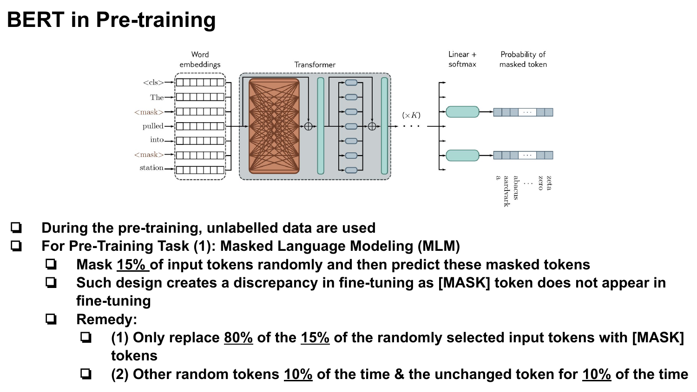
The selection rate is 15% of input WordPiece tokens. To reduce the mismatch between pre-training and fine-tuning, the selected positions are not always replaced by [MASK]:
- 80% of selected positions are replaced with [MASK].
- 10% are replaced with a random token.
- 10% are left unchanged.
The loss is only applied to the selected prediction positions, not to every token in the input.
Pre-Training Task 2: NSP
The second original BERT pre-training task is next sentence prediction. BERT receives sentence A and sentence B. In half of the examples, B is the real sentence that follows A. In the other half, B is a random sentence sampled from the corpus.
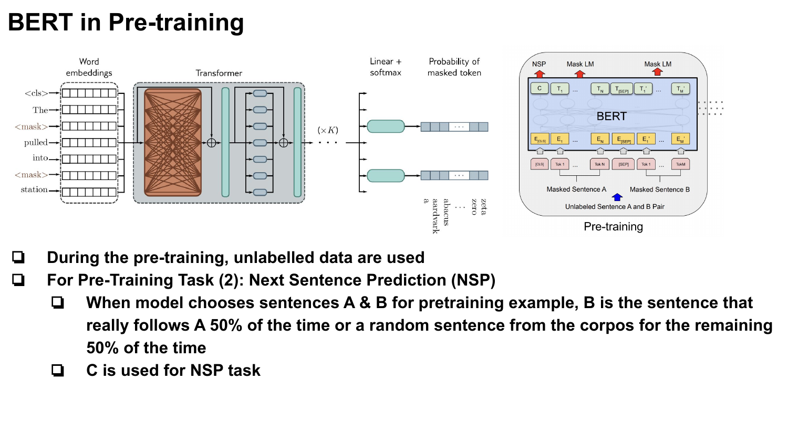
The [CLS] vector \(C\) is used for the NSP classifier. This task was included to train text-pair representations for downstream tasks such as natural language inference and question answering.
Fine-Tuning
Fine-tuning keeps the pre-trained BERT parameters and adds only a small task-specific output layer. The entire model is then updated on labeled task data.
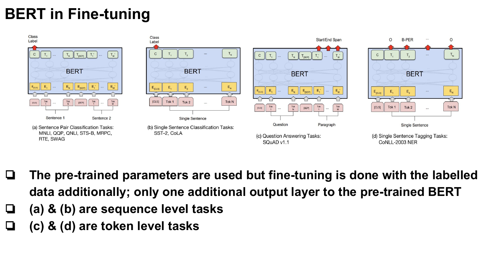
Sequence-level tasks use the [CLS] representation, while token-level tasks use the corresponding token representations. This is one reason BERT's architecture is reusable across classification, sentence-pair, tagging, and question-answering setups.
Results
The deck's results slide emphasizes the empirical payoff: BERT substantially improved then-standard NLP benchmarks such as GLUE, SQuAD, and SWAG. The main lesson is that the combination of deep bidirectional pre-training and simple fine-tuning was strong across both sentence-level and token-level tasks.
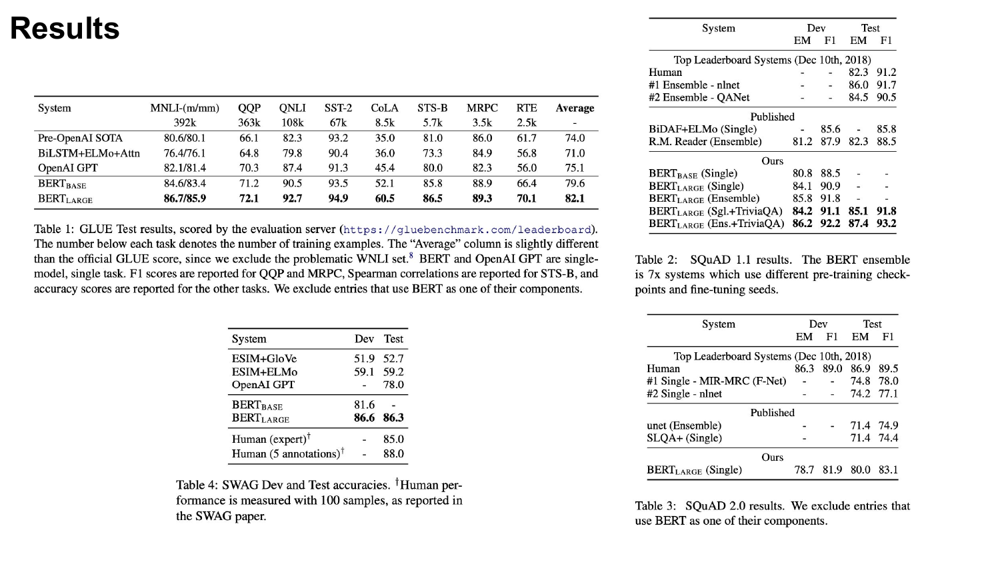
Appendix: Why Scaled Dot-Product Attention?
The scaling factor in attention controls the size of dot-product logits before softmax. If query and key components have mean 0 and variance 1, the dot product variance grows with \(d_k\):
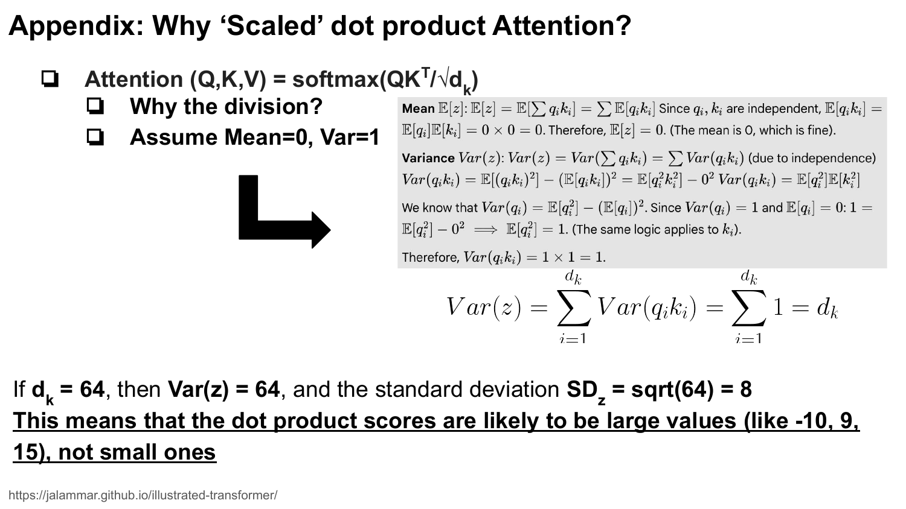
With \(d_k=64\), the standard deviation is \(8\). Scores like -10, 9, or 15 become plausible, and large logits can push softmax toward saturation.
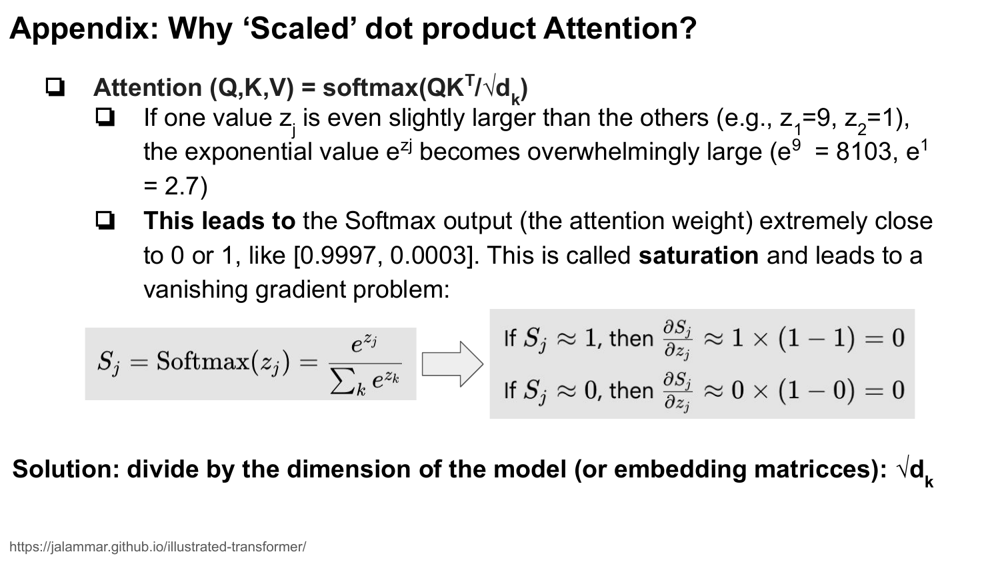
The slide's example \(z_1=9\), \(z_2=1\) yields attention weights near [0.9997, 0.0003]. Dividing by \(\sqrt{d_k}\) keeps logits in a more workable range and helps avoid vanishing gradients through a saturated softmax.
Takeaway
BERT is best understood as a deeply bidirectional Transformer encoder trained with two original pre-training tasks: MLM for token-level bidirectional context and NSP for text-pair relationship modeling. Its input representation sums token, segment, and learned position embeddings; [CLS] provides a sequence-level representation; and fine-tuning adapts the same encoder to many downstream tasks with minimal task-specific architecture.
Source: Devlin et al., BERT: Pre-training of Deep Bidirectional Transformers for Language Understanding.